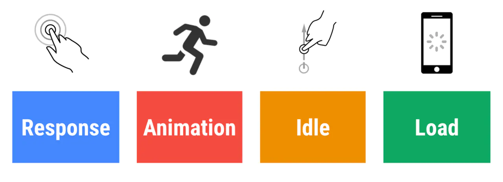

前端性能优化 - 用RAIL模型分析性能
RAIL是一个以用户为中心的性能模型，它把用户的体验拆分成几个关键点（例如，tap，scroll，load），并且帮你定义好了每一个的性能指标。
有以下四个方面：
- Response
- Animation
- Idle
- Load

聚焦用户
以下是用户对性能延迟的感知：
| 延迟时间 | 用户感知 |
|---|---|
| 0-16ms | 很流畅 |
| 0-100ms | 基本流畅 |
| 100-1000ms | 感觉到网站上有一些加载任务 |
| 1000ms or more | 失去耐心了 |
| 10000ms or more | 直接离开，不会再访问了 |
Response: 事件处理最好在50ms内完成
目标
- 用户的输入到响应的时间不超过100ms，给用户的感受是瞬间就完成了。
优化方案
- 事件处理函数在50ms内完成，考虑到idle task的情况，事件会排队，等待时间大概在50ms。适用于click，toggle，starting animations等，不适用于drag和scroll。
- 复杂的js计算尽可能放在后台，如web worker，避免对用户输入造成阻塞
- 超过50ms的响应，一定要提供反馈，比如倒计时，进度百分比等。
idle task：除了要处理输入事件，浏览器还有其它任务要做，这些任务会占用部分时间，一般情况会花费50ms的时间，输入事件的响应则排在其后。
下图是idle task对input response的影响：
Animation: 在10ms内产生一帧
目标
- 产生每一帧的时间不要超过10ms，为了保证浏览器60帧，每一帧的时间在16ms左右，但浏览器需要用6ms来渲染每一帧。
- 旨在视觉上的平滑。用户对帧率变化感知很敏感。
优化方案
- 在一些高压点上，比如动画，不要去挑战cpu，尽可能地少做事，如：取offset，设置style等操作。尽可能地保证60帧的体验。
- 在渲染性能上，针对不同的动画做一些特定优化
动画不只是UI的视觉效果，以下行为都属于
- 视觉动画，如渐隐渐显，tweens，loading等
- 滚动，包含弹性滚动，松开手指后，滚动会持续一段距离
- 拖拽，缩放，经常伴随着用户行为
Idle: 最大化空闲时间
目标
- 最大化空闲时间，以增大50ms内响应用户输入的几率
优化方案
- 用空闲时间来完成一些延后的工作，如先加载页面可见的部分，然后利用空闲时间加载剩余部分，此处可以使用 requestIdleCallback API
- 在空闲时间内执行的任务尽量控制在50ms以内，如果更长的话，会影响input handle的pending时间
- 如果用户在空闲时间任务进行时进行交互，必须以此为最高优先级，并暂停空闲时间的任务
Load: 传输内容到页面可交互的时间不超过5秒
如果页面加载比较慢，用户的交点可能会离开。加载很快的页面，用户平均停留时间会变长，跳出率会更低，也就有更高的广告查看率
目标
- 优化加载速度，可以根据设备、网络等条件。目前，比较好的一个方式是，让你的页面在一个中配的3G网络手机上打开时间不超过5秒
- 对于第二次打开，尽量不超过2秒
优化方案
- 在手机设备上测试加载性能，选用中配的3G网络（400kb/s，400ms RTT），可以使用 WebPageTest 来测试
- 要注意的是，即使用户的网络是4G，但因为丢包或者网络波动，可能会比预期的更慢
- 禁用渲染阻塞的资源，延后加载
- 可以采用 lazy load，code-splitting 等 其他优化 手段，让第一次加载的资源更少